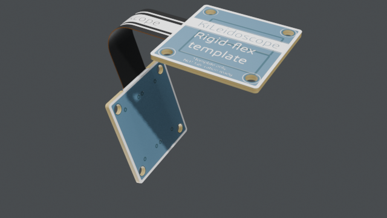

A rigid-flex board for KiLeidoscope's flex mode: 4 copper layers, FR4 outside and a 50 µm polyimide core inside, so In1.Cu and In2.Cu run through the flex. Two rigid ends with mounting holes, joined by a flex zone with black coverlay; one bend (-180° R5) folds one end under the other. The user layers Flex, Bend and Stiffener are named; the design rules are set for flex. A template only: not ready to fabricate.

Flex mode reads drawings on the user layers named Flex, Bend and Stiffener. The board carries a cheat sheet of every mark on User.Comments; copy a text from it onto the right layer.
| Bend layer: a line across the flex, its text beside it | |
| 90° R2 #1 | a bend: + folds towards F.Cu, inside radius in mm, step 1 |
| 90° | no radius: the smallest safe one; no text at all: 90° |
| twist 90° | a line along a tail: the tail turns about it |
| Bend layer: a closed shape | |
| 120° | its sides across the flex are where the bend starts and stops; sides that converge make a cone |
| wrap -360° | a wedge from a cone's tip: the board closes into a cone (+ wraps F.Cu inside, - outside) |
| Bend layer: an arc across a row of fingers | |
| dome R25 | each finger curls from the arc to its tip (or dome 30°) |
| Stiffener layer: a closed shape, its text inside or beside it | |
| Polyimide 0.2 mm bottom | material, thickness, side; FR4 0.2 mm bottom without one |
| steel 0.3 mm top | |
| Flex layer | |
| a closed shape | a flex zone (rigid-flex; a pure flex board is flex all over) |
| Coverlay black | or white; amber without one |